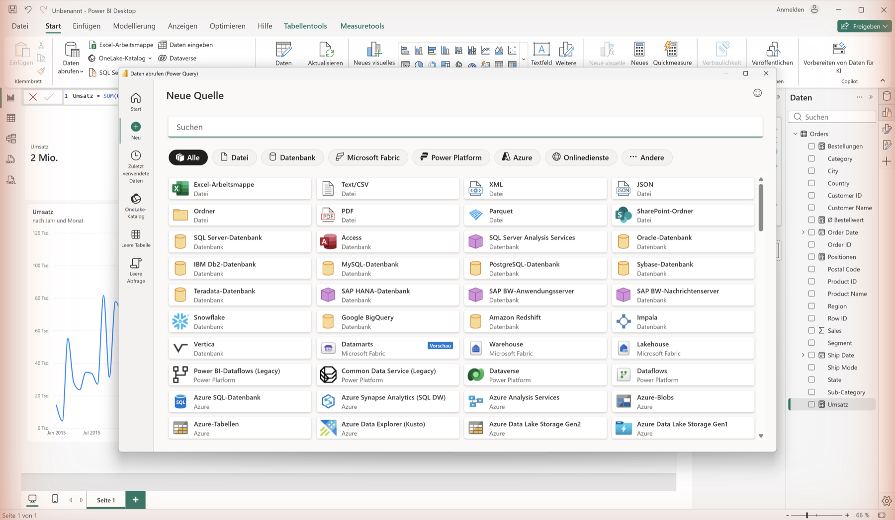
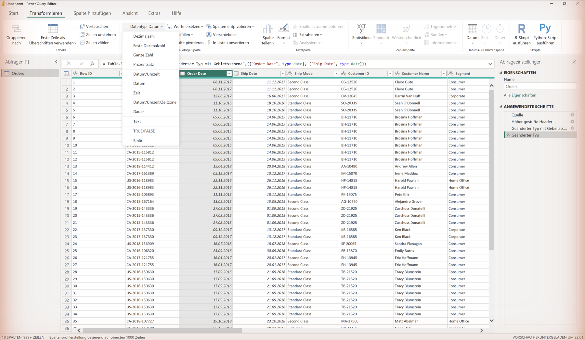
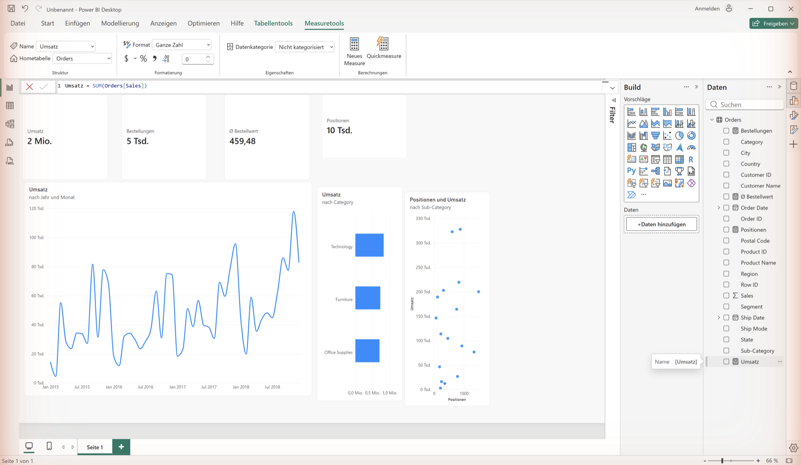
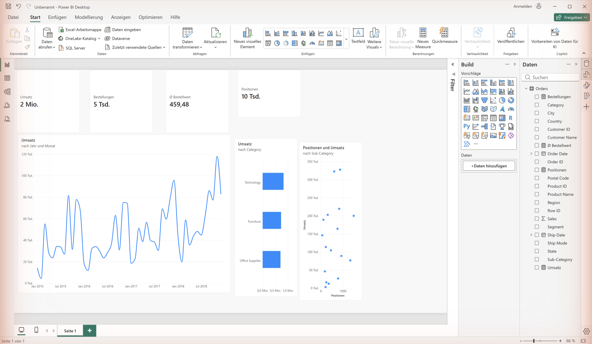
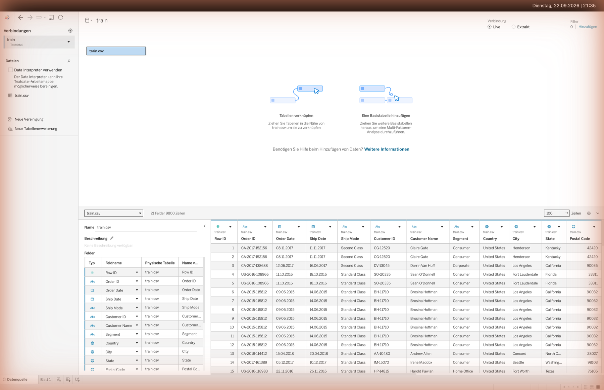
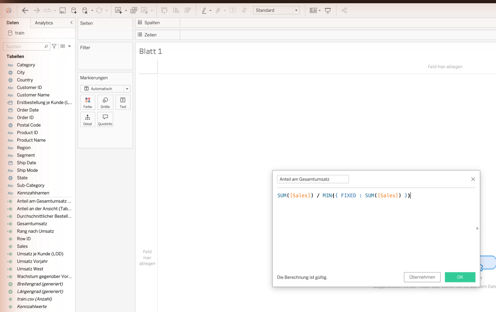
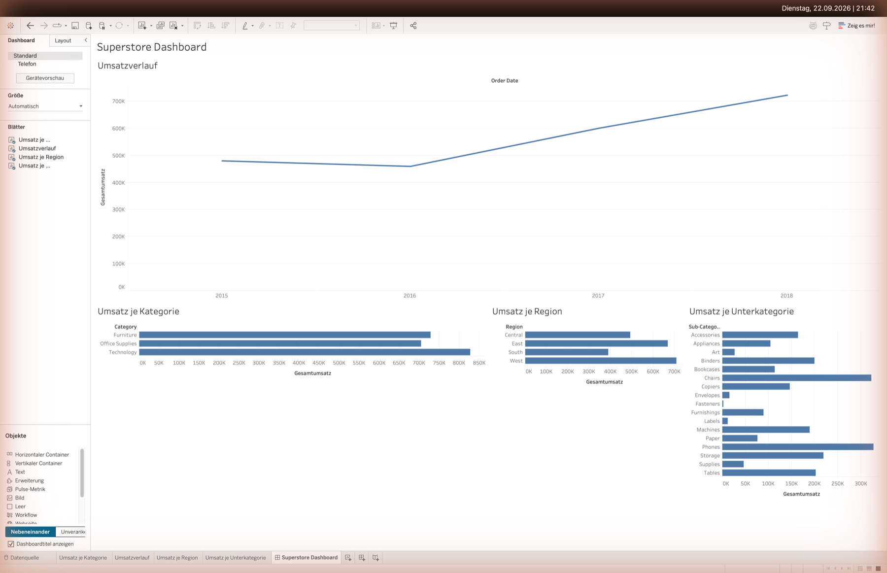

ÜberblickOverview
DatensatzDataset
Superstore Sales Dataset (Kaggle, öffentlich, GPL 2). 9.800 Bestellpositionen aus den USA (2015–2018) mit 18 Feldern: Row ID, Order ID, Order Date, Ship Date, Ship Mode, Customer ID, Customer Name, Segment, Country, City, State, Postal Code, Region, Product ID, Category, Sub-Category, Product Name, Sales. Einzige Kennzahl ist Sales – die Forecasting-Variante enthält bewusst kein Profit, Quantity oder Discount.Superstore Sales Dataset (Kaggle, public, GPL 2). 9,800 order line items from the USA (2015–2018) with 18 fields: Row ID, Order ID, Order Date, Ship Date, Ship Mode, Customer ID, Customer Name, Segment, Country, City, State, Postal Code, Region, Product ID, Category, Sub-Category, Product Name, Sales. Sales is the only measure – the forecasting variant deliberately omits Profit, Quantity and Discount.
Quelle: Superstore Sales Dataset, Rohit Sahoo (Kaggle) · Lizenz: GPL 2Source: Superstore Sales Dataset, Rohit Sahoo (Kaggle) · Licence: GPL 2
Starterpaket herunterladenDownload the starter package
Enthält explore.py, app.py, measures.dax mit der Kalendertabelle, requirements.txt und eine README mit allen Sollwerten. train.csv daneben legen und loslegen – der lange Dash-Code muss nicht aus der Seite kopiert werden.Contains explore.py, app.py, measures.dax including the calendar table, requirements.txt and a README with all expected values. Put train.csv next to it and go – no need to copy the long Dash code out of the page.
Methodischer RahmenMethodological Framework
Diese Fallstudie folgt dem CRISP-DM-Zyklus (Cross-Industry Standard Process for Data Mining, Shearer, 2000): Business Understanding → Data Understanding → Data Preparation → Modeling → Evaluation → Deployment. Die Schritte 1–5 dieses Labs orientieren sich an den ersten vier Phasen. Modeling im engeren Sinn (Prognosemodelle) und ein produktives Deployment bleiben hier bewusst außen vor – CRISP-DM dient als Orientierungsrahmen, nicht als vollständige Abbildung.This case study follows the CRISP-DM cycle (Cross-Industry Standard Process for Data Mining, Shearer, 2000): Business Understanding → Data Understanding → Data Preparation → Modeling → Evaluation → Deployment. Steps 1–5 of this lab follow the first four phases. Modeling in the narrow sense (forecasting models) and a production deployment are deliberately out of scope here – CRISP-DM serves as a frame of orientation, not as a complete mapping.
Schritt 1 – DatenerkundungStep 1 – Data Exploration
Bevor ein Dashboard entsteht, muss der Datensatz verstanden werden. Dieser Schritt klärt Struktur, Datentypen und erste Kennzahlen.Before building a dashboard, the dataset must be understood. This step clarifies structure, data types, and initial key figures.
-
Datensatz laden und Grundstruktur prüfenLoad dataset and check basic structure
import pandas as pd import numpy as np # Datensatz laden (Kaggle: Superstore Sales Dataset -> train.csv) df = pd.read_csv('train.csv', encoding='latin-1') # Datum: die Datei nutzt TT/MM/JJJJ -> dayfirst=True ist Pflicht, # sonst bricht das Parsen ab, sobald der Tag groesser als 12 ist. df['Order Date'] = pd.to_datetime(df['Order Date'], dayfirst=True) # Grundlegende Infos print(df.shape) # (9800, 18) print(df.dtypes) # Datentypen pruefen print(df.isnull().sum()) # Nullwerte pruefen print(df.describe()) # Statistische Uebersicht # Key Stats print(f"Gesamtumsatz: ${df['Sales'].sum():,.0f}") print(f"Bestellungen: {df['Order ID'].nunique():,}") print(f"Positionen: {len(df):,}") print(f"Ø Bestellwert: ${df.groupby('Order ID')['Sales'].sum().mean():,.2f}") print(f"Zeitraum: {df['Order Date'].min():%d.%m.%Y} bis {df['Order Date'].max():%d.%m.%Y}")import pandas as pd import numpy as np # Load the dataset (Kaggle: Superstore Sales Dataset -> train.csv) df = pd.read_csv('train.csv', encoding='latin-1') # Dates: the file uses DD/MM/YYYY -> dayfirst=True is mandatory, # otherwise parsing breaks as soon as the day exceeds 12. df['Order Date'] = pd.to_datetime(df['Order Date'], dayfirst=True) # Basic information print(df.shape) # (9800, 18) print(df.dtypes) # check data types print(df.isnull().sum()) # check null values print(df.describe()) # statistical overview # Key stats print(f"Total revenue: ${df['Sales'].sum():,.0f}") print(f"Orders: {df['Order ID'].nunique():,}") print(f"Line items: {len(df):,}") print(f"Avg order value: ${df.groupby('Order ID')['Sales'].sum().mean():,.2f}") print(f"Period: {df['Order Date'].min():%d/%m/%Y} to {df['Order Date'].max():%d/%m/%Y}")Voraussetzung: pip install pandas numpy, train.csv im selben Verzeichnis. Sollausgabe: (9800, 18), Gesamtumsatz $2.261.537, 4.922 Bestellungen, 9.800 Positionen, Ø Bestellwert $459,48, Zeitraum 03.01.2015 bis 30.12.2018, elf fehlende Postal Code.Prerequisites: pip install pandas numpy, train.csv in the same directory. Expected output: (9800, 18), total revenue $2,261,537, 4,922 orders, 9,800 line items, average order value $459.48, period 03/01/2015 to 30/12/2018, eleven missing Postal Code values.
Selbstcheck (1 Minute)Self-check (1 minute)
- df.shape liefert (9800, 18) – sonst wurde die falsche Datei geladen.df.shape returns (9800, 18) – otherwise the wrong file was loaded.
- Gesamtumsatz 2.261.537 – weicht er ab, stimmt das Encoding nicht.Total revenue 2,261,537 – if it differs, the encoding is wrong.
- Zeitraum 03.01.2015 bis 30.12.2018 – endet er im Dezember 2012 oder wirft pandas einen Fehler, fehlt dayfirst=True.Period 03/01/2015 to 30/12/2018 – if it ends in December 2012 or pandas throws an error, dayfirst=True is missing.
- Genau elf fehlende Postal Code, sonst keine Nullwerte.Exactly eleven missing Postal Code values, no other nulls.
Datenqualität: entscheiden statt weiterscrollenData quality: decide, do not scroll past
df.isnull().sum() meldet elf fehlende Postal Code. Ein gefundener Datenfehler ist erst dann abgearbeitet, wenn eine Entscheidung dokumentiert ist. Die vier Fragen dazu:df.isnull().sum() reports eleven missing Postal Code values. A data defect is only dealt with once a decision is documented. The four questions:
| Ist die Spalte für die Fragestellung relevant?Is the column relevant to the question? | Nein. Umsatz, Kategorie und Region brauchen keine Postleitzahl.No. Revenue, category and region do not need a postal code. |
| Welche Auswertung wäre betroffen?Which analysis would be affected? | Nur eine Karte auf PLZ-Ebene. Die Regionskarte arbeitet mit State und ist vollständig.Only a map at ZIP level. The region map uses State and is complete. |
| Imputieren oder nicht?Impute or not? | Nicht imputieren. Eine erfundene Postleitzahl verortet elf Bestellungen falsch – das ist schlimmer als eine Lücke.Do not impute. An invented postal code puts eleven orders in the wrong place – that is worse than a gap. |
| Zeilen löschen?Delete the rows? | Nein. Das würde Umsatz vernichten, der tatsächlich stattgefunden hat. Die elf Zeilen bleiben, die Lücke wird ausgewiesen.No. That would destroy revenue that actually happened. The eleven rows stay, the gap is disclosed. |
So dokumentiert steht die Entscheidung im Bericht – und ist nachvollziehbar, falls jemand später fragt, warum die Summe der PLZ-Auswertung nicht zum Gesamtumsatz passt.Documented this way the decision belongs in the report – and stays traceable if someone later asks why the ZIP-level total does not match overall revenue.
Schritt 2 – KPI-HierarchieStep 2 – KPI Hierarchy
Gute Dashboards folgen einer KPI-Hierarchie: Strategische Kennzahlen oben, operative Details darunter, Warnsignale separat.Good dashboards follow a KPI hierarchy: strategic metrics at the top, operational details below, warning signals separately.
| EbeneLevel | KPIs | BeschreibungDescription |
|---|---|---|
| StrategischStrategic | Gesamtumsatz, Bestellungen, Ø BestellwertTotal Revenue, Orders, Avg. Order Value | Wie performt das Unternehmen insgesamt?How is the business performing overall? |
| OperativOperational | Umsatz nach Region/Kategorie, Top-10-Produkte, YoYRevenue by Region/Category, Top-10 Products, YoY | Welche Segmente treiben das Ergebnis?Which segments drive the result? |
| WarnsignaleWarning Signals | Sub-Kategorien mit rückläufigem Umsatz (YoY), Bundesländer mit Ø Bestellwert unter DurchschnittSub-categories with declining revenue (YoY), states with below-average order value | Wo bricht Umsatz weg – und wo sind die Bestellungen zu klein?Where is revenue eroding – and where are orders too small? |
Prinzip: KPIs von oben nach untenPrinciple: KPIs top-down
Stakeholder wollen zuerst den Gesamtstatus sehen, dann in Problembereiche einzoomen. Strategische KPIs prominent, operative Details auf Anfrage, Warnsignale visuell hervorheben (Shneiderman, 1996: „Overview first, zoom and filter, then details-on-demand“).Stakeholders want to see the overall status first, then drill into problem areas. Strategic KPIs prominently placed, operational details on demand, warning signals visually highlighted (Shneiderman, 1996: “Overview first, zoom and filter, then details-on-demand”).
Schritt 3 – Power BI Step by StepStep 3 – Power BI Step by Step
-
CSV importierenImport CSV
Start → Daten abrufen → Text/CSV → train.csv auswählen → Laden. Danach die Tabelle im Feldbereich von „train“ in „Orders“ umbenennen – die DAX-Measures in Schritt 3 referenzieren Orders. Ebenfalls wichtig: Order Date und Ship Date im Power Query Editor als Datum (TT/MM/JJJJ) typisieren.Home → Get Data → Text/CSV → select train.csv → Load. Then rename the table in the Fields pane from “train” to “Orders” – the DAX measures in step 3 reference Orders. Also important: set Order Date and Ship Date to Date (DD/MM/YYYY) in the Power Query Editor.

Power BI Desktop: Start → Daten abrufen → Weitere … öffnet die Quellenauswahl mit den Konnektoren.Power BI Desktop: Home → Get Data → More … opens the source selection with the connectors. -
Power Query – DatentransformationPower Query – Data Transformation
Sicherstellen: Order Date als Datum, Spalten prüfen auf Nullwerte, Datentypen kontrollieren. Stolperfalle bei deutscher Oberfläche: Die automatische Typerkennung liest die Spalte Sales mit deutschem Gebietsschema, aus 957.5775 wird die Ganzzahl 9575775 und der Gesamtumsatz landet bei rund 1 Mrd. statt 2.261.536,78. Abhilfe: den Schritt „Geänderter Spaltentyp“ löschen, dann Sales über Typ ändern → Mit Gebietsschema als Dezimalzahl mit Gebietsschema Englisch (USA) typisieren und Order Date und Ship Date danach als Datum setzen.Ensure: Order Date is Date type, check columns for null values, verify data types. Pitfall with a German interface: automatic type detection reads the Sales column with the German locale, 957.5775 becomes the whole number 9575775 and total revenue ends up around 1 billion instead of 2,261,536.78. Fix: delete the “Changed Type” step, then set Sales via Change Type → Using Locale to Decimal Number with locale English (United States), and set Order Date and Ship Date to Date afterwards.

Power Query Editor, Registerkarte Transformieren: Für die markierte Spalte Order Date ist der Datentyp Datum gewählt; das Dropdown zeigt die verfügbaren Typen.Power Query Editor, Transform tab: the selected column Order Date has the data type Date; the dropdown shows the available types. -
Measures erstellenCreate Measures
Im Datenmodell unter „New Measure“ die folgenden DAX-Ausdrücke anlegen:In the data model under “New Measure”, create the following DAX expressions:
-- 1. Kalendertabelle anlegen (Modellierung -> Neue Tabelle) -- Zeitintelligenz braucht eine lueckenlose, als Datumstabelle -- markierte Tabelle. Auto-Datum/Uhrzeit reicht dafuer nicht. Datum = VAR _min = MIN(Orders[Order Date]) VAR _max = MAX(Orders[Order Date]) RETURN ADDCOLUMNS( CALENDAR(DATE(YEAR(_min), 1, 1), DATE(YEAR(_max), 12, 31)), "Jahr", YEAR([Date]), "Monatsnr", MONTH([Date]), "Monat", FORMAT([Date], "MMM"), "Quartal", "Q" & QUARTER([Date]) ) -- 2. Danach im Menueband: Tabellentools -> Als Datumstabelle markieren -- -> Spalte [Date] waehlen. Anschliessend im Modell eine 1:n-Beziehung -- von Datum[Date] zu Orders[Order Date] ziehen. -- 3. Grundlegende Measures Umsatz = SUM(Orders[Sales]) Bestellungen = DISTINCTCOUNT(Orders[Order ID]) Positionen = COUNTROWS(Orders) Avg_Bestellwert = DIVIDE([Umsatz], [Bestellungen], 0) -- Zeitintelligenz laeuft ueber die Datumstabelle, nicht ueber Orders: Umsatz_VJ = CALCULATE([Umsatz], SAMEPERIODLASTYEAR(Datum[Date])) YoY_Wachstum = DIVIDE([Umsatz] - [Umsatz_VJ], [Umsatz_VJ], 0) * 100 -- Sollwerte zur Kontrolle: -- Umsatz 2.261.536,78 | Bestellungen 4.922 | Positionen 9.800 -- Avg_Bestellwert 459,48 -- 2017: 600.192,55 | 2018: 722.052,02 | YoY_Wachstum 2018 ~ 20,3 % -- Hinweis: Der Datensatz enthaelt keine Kosten- oder Gewinnspalte. -- Deckungsbeitrags-Measures wie Gewinn oder Marge lassen sich damit -- nicht bilden; sie brauchen die Vollversion des Superstore-Datensatzes.-- 1. Create a calendar table (Modeling -> New table) -- Time intelligence needs a gap-free table that is marked as a -- date table. Auto date/time is not enough for this. Date_Table = VAR _min = MIN(Orders[Order Date]) VAR _max = MAX(Orders[Order Date]) RETURN ADDCOLUMNS( CALENDAR(DATE(YEAR(_min), 1, 1), DATE(YEAR(_max), 12, 31)), "Year", YEAR([Date]), "MonthNo", MONTH([Date]), "Month", FORMAT([Date], "MMM"), "Quarter", "Q" & QUARTER([Date]) ) -- 2. Then on the ribbon: Table tools -> Mark as date table -- -> pick column [Date]. Afterwards draw a 1:many relationship -- from Date_Table[Date] to Orders[Order Date] in the model. -- 3. Base measures Revenue = SUM(Orders[Sales]) Orders_Count = DISTINCTCOUNT(Orders[Order ID]) LineItems = COUNTROWS(Orders) Avg_Order_Value = DIVIDE([Revenue], [Orders_Count], 0) -- Time intelligence runs through the date table, not through Orders: Revenue_PY = CALCULATE([Revenue], SAMEPERIODLASTYEAR(Date_Table[Date])) YoY_Growth = DIVIDE([Revenue] - [Revenue_PY], [Revenue_PY], 0) * 100 -- Expected values for checking: -- Revenue 2,261,536.78 | Orders 4,922 | Line items 9,800 -- Avg order value 459.48 -- 2017: 600,192.55 | 2018: 722,052.02 | YoY growth 2018 ~ 20.3% -- Note: the dataset has no cost or profit column. Contribution-margin -- measures such as profit or margin cannot be built from it; they need -- the full version of the Superstore dataset.Voraussetzung: train.csv ist importiert und die Tabelle in Orders umbenannt (Schritt 1). Sollwerte: Umsatz 2.261.536,78 · Bestellungen 4.922 · Positionen 9.800 · Ø Bestellwert 459,48 · YoY_Wachstum 2018 gegenüber 2017 rund 20,3 %.Prerequisites: train.csv imported and the table renamed to Orders (step 1). Expected values: revenue 2,261,536.78 · orders 4,922 · line items 9,800 · average order value 459.48 · YoY growth 2018 over 2017 about 20.3%.

Neues Measure: Die Formelleiste zeigt Umsatz = SUM(Orders[Sales]); das Measure erscheint danach im Feldbereich der Tabelle Orders.New measure: the formula bar shows Umsatz = SUM(Orders[Sales]); the measure then appears in the field pane of the Orders table. -
Dashboard aufbauenBuild Dashboard
4 KPI-Cards oben (Umsatz, Bestellungen, Ø Bestellwert, Positionen), Umsatz-Trend-Linie (monatlich), Kategorie-Balkendiagramm, Region-Karte (Kartenvisuals müssen unter Datei → Optionen → Sicherheit erlaubt sein, sonst ein Treemap je Region), Streudiagramm Umsatz vs. Bestellpositionen je Sub-Kategorie.4 KPI cards at the top (Revenue, Orders, Avg. Order Value, Line Items), Revenue trend line (monthly), Category bar chart, region map (map visuals must be allowed under File → Options → Security, otherwise a treemap per region), scatter of revenue vs. line items per sub-category.

Das fertige Power-BI-Dashboard: vier Kennzahlkarten (2,26 Mio. Umsatz, 4.922 Bestellungen, 459,48 Ø Bestellwert, 9.800 Positionen), Umsatzverlauf je Monat, Balken je Kategorie und Streudiagramm je Sub-Kategorie.The finished Power BI dashboard: four KPI cards (2.26M revenue, 4,922 orders, 459.48 average order value, 9,800 line items), monthly revenue trend, bars per category and scatter plot per sub-category. - Slicer & FormatierungSlicers & Formatting Slicer für: Jahr, Region, Kategorie. Einheitliche Farben, Datenbeschriftungen aktivieren.Slicers for: Year, Region, Category. Consistent colours, enable data labels.
Schritt 3b – Tableau Step by StepStep 3b – Tableau Step by Step
Dieselbe Fallstudie in Tableau Desktop oder Tableau Public. Die berechneten Felder entsprechen den DAX-Measures aus Schritt 3.The same case study in Tableau Desktop or Tableau Public. The calculated fields match the DAX measures from step 3.
Fertige Arbeitsmappe herunterladenDownload the finished workbook
BINT_Tableau_Uebung.twbx enthält train.csv und alle berechneten Felder aus diesem Abschnitt. Die Datei ist gepackt – sie läuft ohne weitere Verbindung in Tableau Desktop und in Tableau Public. Zum Nachbauen erst selbst rechnen, dann vergleichen.BINT_Tableau_Uebung.twbx ships train.csv together with all calculated fields from this section. It is a packaged workbook – it opens in Tableau Desktop and Tableau Public without any further connection. Build your own version first, then compare.
-
Verbindung zur CSV herstellenConnect to the CSV
Startseite → Verbinden → Zu einer Datei → Textdatei → train.csv auswählen. Tableau öffnet die Datenquellenseite mit der Tabelle im Canvas. Der Reiter Blatt 1 unten links wechselt zum ersten Arbeitsblatt. Encoding auf UTF-8 belassen; erscheinen in Customer Name verstellte Zeichen, in der Datenquelle auf Windows-1252 umstellen.Start page → Connect → To a File → Text file → select train.csv. Tableau opens the data source page with the table on the canvas. The Sheet 1 tab in the bottom left switches to the first worksheet. Leave the encoding at UTF-8; if Customer Name shows garbled characters, switch the data source to Windows-1252.

Datenquellenseite in Tableau Desktop nach dem Verbinden von train.csv: Tabelle im Canvas, darunter Felder mit Datentyp und die Vorschau der 9.800 Zeilen.Data source page in Tableau Desktop after connecting train.csv: table in the canvas, fields with data type below and the preview of the 9,800 rows. - Datumsspalte prüfenCheck the date column In der Datenquellenvorschau das Typsymbol über Order Date prüfen. Ein Kalendersymbol steht für Datum, Abc für Text. Das Bestelldatum steht als 08/11/2017, also Tag zuerst. Liest Tableau die Spalte als Text, hilft ein berechnetes Feld DATEPARSE("dd/MM/yyyy", [Order Date]); alle zeitbezogenen Ansichten verwenden dann dieses Feld. Kontrolle: der Zeitraum reicht vom 03.01.2015 bis zum 30.12.2018.In the data source preview, check the type icon above Order Date. A calendar icon means date, Abc means text. The order date is stored as 08/11/2017, day first. If Tableau reads the column as text, a calculated field DATEPARSE("dd/MM/yyyy", [Order Date]) fixes it; every time-based view then uses that field. Check: the period runs from 03/01/2015 to 30/12/2018.
-
Berechnete Felder anlegenCreate calculated fields
Analyse → Berechnetes Feld erstellen. Die folgenden Felder anlegen und unter dem Namen aus der jeweiligen Kommentarzeile speichern.Analysis → Create Calculated Field. Create the following fields and save each one under the name given in its comment line.
// Gesamtumsatz SUM([Sales]) // Umsatz West - in DAX: CALCULATE(SUM(...), Region = "West") SUM(IF [Region] = "West" THEN [Sales] END) // Anteil am Gesamtumsatz - LOD, unabhaengig von der Ansicht SUM([Sales]) / MIN({ FIXED : SUM([Sales]) }) // Anteil an der Ansicht - Tabellenberechnung SUM([Sales]) / TOTAL(SUM([Sales])) // Umsatz des Vorjahres - Jahr muss in der Ansicht liegen LOOKUP(SUM([Sales]), -1) // Wachstum gegenueber dem Vorjahr (SUM([Sales]) - LOOKUP(SUM([Sales]), -1)) / LOOKUP(SUM([Sales]), -1) // Umsatz je Kunde { FIXED [Customer ID] : SUM([Sales]) } // Durchschnittlicher Bestellwert SUM([Sales]) / COUNTD([Order ID])// Total revenue SUM([Sales]) // Revenue West - in DAX: CALCULATE(SUM(...), Region = "West") SUM(IF [Region] = "West" THEN [Sales] END) // Share of total revenue - LOD, independent of the view SUM([Sales]) / MIN({ FIXED : SUM([Sales]) }) // Share of the view - table calculation SUM([Sales]) / TOTAL(SUM([Sales])) // Previous year revenue - the year must be in the view LOOKUP(SUM([Sales]), -1) // Growth over the previous year (SUM([Sales]) - LOOKUP(SUM([Sales]), -1)) / LOOKUP(SUM([Sales]), -1) // Revenue per customer { FIXED [Customer ID] : SUM([Sales]) } // Average order value SUM([Sales]) / COUNTD([Order ID])Voraussetzung: train.csv ist als Datenquelle verbunden und Order Date liegt als Datum vor. Sollwerte ohne Filter: Gesamtumsatz 2.261.536,78 · Umsatz West 710.219,68 · Anteil West 31,4 % · Ø Bestellwert 459,48. Anteil an der Ansicht, Umsatz des Vorjahres und Wachstum sind Tabellenberechnungen und hängen von den Feldern in der Ansicht ab.Prerequisites: train.csv connected as a data source and Order Date typed as a date. Expected values without filters: total revenue 2,261,536.78 · revenue West 710,219.68 · share West 31.4% · average order value 459.48. Share of the view, previous year revenue and growth are table calculations and depend on the fields in the view.
Anteil am Gesamtumsatz und Anteil an der Ansicht liefern verschiedene Werte. { FIXED : SUM([Sales]) } ignoriert die Dimensionsfilter der Ansicht und ergibt immer 2.261.536,78; ein Kontextfilter wirkt dagegen auch auf diesen Ausdruck. TOTAL(SUM([Sales])) bezieht sich auf die Zeilen der aktuellen Ansicht und ändert sich mit jedem Filter.Share of Total Revenue and Share of the View return different numbers. { FIXED : SUM([Sales]) } ignores the dimension filters of the view and always returns 2,261,536.78; a context filter does apply to it. TOTAL(SUM([Sales])) refers to the rows of the current view and changes with every filter.

Analyse → Berechnetes Feld erstellen: Name und Formel, hier der LOD-Ausdruck für den Anteil am Gesamtumsatz. Tableau meldet unten, ob die Berechnung gültig ist.Analysis → Create Calculated Field: name and formula, here the LOD expression for the share of total revenue. Tableau reports at the bottom whether the calculation is valid. - Eine Ansicht je KPIOne view per KPI Pro Arbeitsblatt eine Kennzahl. Umsatzverlauf: Order Date als Jahr in Spalten, Gesamtumsatz in Zeilen, Markierungstyp Linie. Umsatz je Kategorie: Category in Zeilen, Gesamtumsatz in Spalten, absteigend sortiert. Umsatz je Region: Region in Zeilen, Gesamtumsatz in Spalten, Anteil am Gesamtumsatz auf Beschriftung. Umsatz je Unterkategorie: Sub-Category in Zeilen, Gesamtumsatz in Spalten. Wachstum: Jahr in Spalten, Wachstum gegenüber dem Vorjahr in Zeilen – LOOKUP liest den Vorjahreswert aus der Ansicht, das Jahr muss daher in der Ansicht liegen.One metric per worksheet. Revenue over time: Order Date as year on Columns, Total Revenue on Rows, mark type Line. Revenue by category: Category on Rows, Total Revenue on Columns, sorted descending. Revenue by region: Region on Rows, Total Revenue on Columns, Share of Total Revenue on Label. Revenue by sub-category: Sub-Category on Rows, Total Revenue on Columns. Growth: year on Columns, Growth over the previous year on Rows – LOOKUP reads the prior value from the view, so the year has to be in the view.
-
Ansichten zu einem Dashboard zusammensetzenAssemble the views into a dashboard
Dashboard → Neues Dashboard, Größe auf Automatisch. Die Arbeitsblätter aus der linken Liste auf die Fläche ziehen: Kennzahlen oben, Detailansichten darunter. Am Rand eines Arbeitsblatts öffnet das Dropdown den Eintrag Als Filter verwenden; eine Auswahl dort filtert die übrigen Ansichten. Der Wirkungsbereich lässt sich über Filter → Anwenden auf → Ausgewählte Arbeitsblätter einschränken.Dashboard → New Dashboard, size set to Automatic. Drag the worksheets from the list on the left onto the canvas: metrics at the top, detail views below. The dropdown at the edge of a worksheet offers Use as Filter; a selection there filters the remaining views. Filter → Apply to Worksheets → Selected Worksheets narrows the scope.

Tableau-Dashboard mit Größe Automatisch: Umsatzverlauf oben, darunter Umsatz je Kategorie, je Region und je Unterkategorie; „Als Filter verwenden“ ist auf dem Kategorie-Blatt aktiv.Tableau dashboard with automatic size: revenue trend on top, below revenue per category, per region and per sub-category; “Use as filter” is active on the category sheet. - Arbeitsmappe als .twbx weitergebenShare the workbook as .twbx Datei → Speichern unter → Verpackte Arbeitsmappe (.twbx). Die twbx-Datei enthält Arbeitsmappe und Datenextrakt zusammen, die Empfangenden brauchen train.csv nicht. Eine .twb speichert nur den Verweis auf den lokalen Pfad und bleibt auf fremden Rechnern leer. Tableau Public veröffentlicht jede gespeicherte Arbeitsmappe im Web – vertrauliche Daten gehören in Tableau Desktop mit lokaler Speicherung.File → Save As → Packaged Workbook (.twbx). The twbx file holds workbook and data extract together, so recipients do not need train.csv. A .twb only stores the reference to the local path and stays empty on other machines. Tableau Public publishes every saved workbook on the web – confidential data belongs in Tableau Desktop with local storage.
SelbstcheckSelf-check
- Die Datenquelle meldet 9.800 Zeilen und 18 Spalten. Eine Profit-Spalte enthält diese Datei nicht, Deckungsbeiträge lassen sich daraus nicht berechnen.The data source reports 9,800 rows and 18 columns. This file has no Profit column, so contribution margins cannot be derived from it.
- Gesamtumsatz 2.261.536,78. Umsatz West 710.219,68, Anteil am Gesamtumsatz 31,4 %.Total revenue 2,261,536.78. Revenue West 710,219.68, share of total revenue 31.4%.
- Jahresumsätze: 2015 479.856,21 · 2016 459.436,01 · 2017 600.192,55 · 2018 722.052,02. Enden die Jahre 2012 oder fehlen Zeilen, wurde das Datum als MM/dd/yyyy gelesen.Annual revenue: 2015 479,856.21 · 2016 459,436.01 · 2017 600,192.55 · 2018 722,052.02. If the years end in 2012 or rows go missing, the date was read as MM/dd/yyyy.
- Wachstum gegenüber dem Vorjahr: 2016 −4,3 %, 2017 +30,6 %, 2018 +20,3 %. Zeigt die Spalte 2015 einen Wert, läuft die Tabellenberechnung in die falsche Richtung.Growth over the previous year: 2016 −4.3%, 2017 +30.6%, 2018 +20.3%. If the 2015 column shows a value, the table calculation runs in the wrong direction.
- Stärkste Unterkategorien: Phones 327.782,45 · Chairs 322.822,73 · Storage 219.343,39.Strongest sub-categories: Phones 327,782.45 · Chairs 322,822.73 · Storage 219,343.39.
- 4.922 Bestellungen, 793 Kunden, Ø Bestellwert 459,48. COUNTD([Order ID]) und nicht COUNT, sonst zählt Tableau die 9.800 Positionen.4,922 orders, 793 customers, average order value 459.48. Use COUNTD([Order ID]) rather than COUNT, otherwise Tableau counts the 9,800 line items.
Schritt 4 – Plotly Dash Step by StepStep 4 – Plotly Dash Step by Step
Die folgende Dash-App repliziert das Power-BI-Dashboard in Python. In app.py speichern und mit python app.py starten.The following Dash app replicates the Power BI dashboard in Python. Save as app.py and start with python app.py.
Plotly & CSS-Variablen
Wichtig: Plotly rendert zu SVG/Canvas, nicht ins DOM. CSS-Variablen wie var(--col-primary) funktionieren NICHT in color_discrete_sequence. Immer Hex-Werte (#1E3A8A) für Plotly-Farben verwenden.Important: Plotly renders to SVG/Canvas, not the DOM. CSS variables like var(--col-primary) do NOT work in color_discrete_sequence. Always use hex values (#1E3A8A) for Plotly colours.
# app.py – Superstore Retail Analytics Dashboard
import dash
from dash import dcc, html, Input, Output
import plotly.express as px
import pandas as pd
app = dash.Dash(__name__)
# Ein Dashboard, das auf dem Handy bricht, ist kein fertiges Dashboard.
# Feste Spaltenzahlen (repeat(4, 1fr)) sprengen jedes schmale Display,
# deshalb liegt das Raster in CSS mit Media Queries statt in Inline-Styles.
app.index_string = """<!DOCTYPE html>
<html>
<head>
{%metas%}<title>{%title%}</title>{%favicon%}{%css%}
<style>
*, *::before, *::after { box-sizing: border-box; }
body { margin: 0; font-family: -apple-system, BlinkMacSystemFont,
'Segoe UI', sans-serif; }
.kpi-grid, .chart-grid { display: grid; gap: 1rem; }
.kpi-grid { padding: 1rem 2rem; grid-template-columns: 1fr; }
.chart-grid { padding: 0 2rem 1rem; grid-template-columns: 1fr; }
.filter-row { display: flex; flex-wrap: wrap; gap: 1rem;
padding: 1rem 2rem; background: #f8fafc; }
/* min-width: 0 ist noetig, sonst schrumpfen Flex-Kinder nicht unter
ihre Inhaltsbreite - derselbe Fallstrick wie bei den Lab-Seiten. */
.filter-row > div { flex: 1 1 240px; min-width: 0; }
@media (min-width: 640px) { .kpi-grid { grid-template-columns: repeat(2, 1fr); } }
@media (min-width: 1000px) { .kpi-grid { grid-template-columns: repeat(4, 1fr); }
.chart-grid { grid-template-columns: 1fr 1fr; } }
/* Plotly zeichnet in SVG und richtet sich nicht von allein nach dem
Container - ohne diese Regel ragen die Diagramme heraus. */
.js-plotly-plot, .plot-container, .dash-graph { max-width: 100%; }
</style>
</head>
<body>{%app_entry%}<footer>{%config%}{%scripts%}{%renderer%}</footer></body>
</html>"""
# Daten laden und vorbereiten
df = pd.read_csv('train.csv', encoding='latin-1')
# TT/MM/JJJJ -> dayfirst=True zwingend
df['Order Date'] = pd.to_datetime(df['Order Date'], dayfirst=True)
df['Month'] = df['Order Date'].dt.to_period('M').dt.to_timestamp()
# Farben als Python-Konstanten (NICHT CSS-Variablen!)
# Plotly rendert zu SVG/Canvas, nicht ins DOM –
# var(--col-primary) funktioniert dort nicht.
COL_PRIMARY = '#1E3A8A'
COL_ACCENT = '#2563EB'
app.layout = html.Div([
# Header
html.Div([
html.H1('Superstore Analytics Dashboard',
style={'margin': '0', 'fontSize': '1.5rem'}),
], style={'background': COL_PRIMARY, 'color': 'white',
'padding': '1rem 2rem'}),
# Filter
html.Div([
html.Div([
html.Label('Segment:'),
dcc.Dropdown(
id='segment-filter',
options=[{'label': s, 'value': s}
for s in df['Segment'].unique()],
value=df['Segment'].unique().tolist(),
multi=True, clearable=False
),
]),
html.Div([
html.Label('Region:'),
dcc.Dropdown(
id='region-filter',
options=[{'label': r, 'value': r}
for r in df['Region'].unique()],
value=df['Region'].unique().tolist(),
multi=True, clearable=False
),
]),
], className='filter-row'),
# KPI Cards
html.Div(id='kpi-cards', className='kpi-grid'),
# Charts
html.Div([
dcc.Graph(id='trend-chart', config={'responsive': True}),
dcc.Graph(id='category-chart', config={'responsive': True}),
], className='chart-grid'),
dcc.Graph(id='scatter-chart', config={'responsive': True},
style={'padding': '0 2rem 2rem'}),
])
def kpi_card(title, value, color=COL_PRIMARY):
return html.Div([
html.Div(value, style={'fontSize': '1.75rem', 'fontWeight': '800',
'color': color}),
html.Div(title, style={'fontSize': '0.75rem', 'color': '#6B7280',
'textTransform': 'uppercase',
'letterSpacing': '0.08em'}),
], style={'background': 'white', 'padding': '1.25rem',
'border': '1px solid #e5e7eb',
'borderLeft': f'4px solid {color}'})
@app.callback(
Output('kpi-cards', 'children'),
Output('trend-chart', 'figure'),
Output('category-chart', 'figure'),
Output('scatter-chart', 'figure'),
Input('segment-filter', 'value'),
Input('region-filter', 'value')
)
def update_dashboard(segments, regions):
fdf = df[df['Segment'].isin(segments) &
df['Region'].isin(regions)]
# KPI Cards
total_sales = fdf['Sales'].sum()
orders = fdf['Order ID'].nunique()
positions = len(fdf)
avg_order = total_sales / orders if orders else 0
cards = [
kpi_card('Umsatz', f'${total_sales:,.0f}'),
kpi_card('Bestellungen', f'{orders:,}'),
kpi_card('Ø Bestellwert', f'${avg_order:,.0f}', COL_ACCENT),
kpi_card('Positionen', f'{positions:,}'),
]
# Trend
trend = fdf.groupby('Month')['Sales'].sum().reset_index()
fig1 = px.line(trend, x='Month', y='Sales',
title='Umsatz-Trend (monatlich)',
color_discrete_sequence=[COL_ACCENT])
fig1.update_layout(plot_bgcolor='white', paper_bgcolor='white')
# Kategorie
by_cat = fdf.groupby('Category')['Sales'].sum().reset_index()
fig2 = px.bar(by_cat, x='Category', y='Sales',
title='Umsatz nach Kategorie',
color_discrete_sequence=[COL_PRIMARY])
fig2.update_layout(plot_bgcolor='white', paper_bgcolor='white')
# Scatter
by_sub = fdf.groupby('Sub-Category').agg(
Sales=('Sales','sum'), Positionen=('Order ID','count')
).reset_index()
fig3 = px.scatter(by_sub, x='Positionen', y='Sales',
text='Sub-Category', size='Sales',
title='Umsatz vs. Bestellpositionen nach Sub-Kategorie',
color_discrete_sequence=[COL_ACCENT])
fig3.update_traces(textposition='top center')
fig3.update_layout(plot_bgcolor='white', paper_bgcolor='white')
return cards, fig1, fig2, fig3
if __name__ == '__main__':
app.run(debug=True)
# app.py - Superstore Retail Analytics Dashboard
import dash
from dash import dcc, html, Input, Output
import plotly.express as px
import pandas as pd
app = dash.Dash(__name__)
# A dashboard that breaks on a phone is not a finished dashboard.
# Fixed column counts (repeat(4, 1fr)) blow up every narrow screen, so the
# grid lives in CSS with media queries instead of inline styles.
app.index_string = """<!DOCTYPE html>
<html>
<head>
{%metas%}<title>{%title%}</title>{%favicon%}{%css%}
<style>
*, *::before, *::after { box-sizing: border-box; }
body { margin: 0; font-family: -apple-system, BlinkMacSystemFont,
'Segoe UI', sans-serif; }
.kpi-grid, .chart-grid { display: grid; gap: 1rem; }
.kpi-grid { padding: 1rem 2rem; grid-template-columns: 1fr; }
.chart-grid { padding: 0 2rem 1rem; grid-template-columns: 1fr; }
.filter-row { display: flex; flex-wrap: wrap; gap: 1rem;
padding: 1rem 2rem; background: #f8fafc; }
/* min-width: 0 is required, otherwise flex children will not shrink
below their content width - the same trap as on the lab pages. */
.filter-row > div { flex: 1 1 240px; min-width: 0; }
@media (min-width: 640px) { .kpi-grid { grid-template-columns: repeat(2, 1fr); } }
@media (min-width: 1000px) { .kpi-grid { grid-template-columns: repeat(4, 1fr); }
.chart-grid { grid-template-columns: 1fr 1fr; } }
/* Plotly draws to SVG and does not follow its container on its own -
without this rule the charts stick out. */
.js-plotly-plot, .plot-container, .dash-graph { max-width: 100%; }
</style>
</head>
<body>{%app_entry%}<footer>{%config%}{%scripts%}{%renderer%}</footer></body>
</html>"""
# Load and prepare the data
df = pd.read_csv('train.csv', encoding='latin-1')
# DD/MM/YYYY -> dayfirst=True is mandatory
df['Order Date'] = pd.to_datetime(df['Order Date'], dayfirst=True)
df['Month'] = df['Order Date'].dt.to_period('M').dt.to_timestamp()
# Colours as Python constants (NOT CSS variables!)
# Plotly renders to SVG/Canvas, not into the DOM -
# var(--col-primary) does not work there.
COL_PRIMARY = '#1E3A8A'
COL_ACCENT = '#2563EB'
app.layout = html.Div([
# Header
html.Div([
html.H1('Superstore Analytics Dashboard',
style={'margin': '0', 'fontSize': '1.5rem'}),
], style={'background': COL_PRIMARY, 'color': 'white',
'padding': '1rem 2rem'}),
# Filter
html.Div([
html.Div([
html.Label('Segment:'),
dcc.Dropdown(
id='segment-filter',
options=[{'label': s, 'value': s}
for s in df['Segment'].unique()],
value=df['Segment'].unique().tolist(),
multi=True, clearable=False
),
]),
html.Div([
html.Label('Region:'),
dcc.Dropdown(
id='region-filter',
options=[{'label': r, 'value': r}
for r in df['Region'].unique()],
value=df['Region'].unique().tolist(),
multi=True, clearable=False
),
]),
], className='filter-row'),
# KPI Cards
html.Div(id='kpi-cards', className='kpi-grid'),
# Charts
html.Div([
dcc.Graph(id='trend-chart', config={'responsive': True}),
dcc.Graph(id='category-chart', config={'responsive': True}),
], className='chart-grid'),
dcc.Graph(id='scatter-chart', config={'responsive': True},
style={'padding': '0 2rem 2rem'}),
])
def kpi_card(title, value, color=COL_PRIMARY):
return html.Div([
html.Div(value, style={'fontSize': '1.75rem', 'fontWeight': '800',
'color': color}),
html.Div(title, style={'fontSize': '0.75rem', 'color': '#6B7280',
'textTransform': 'uppercase',
'letterSpacing': '0.08em'}),
], style={'background': 'white', 'padding': '1.25rem',
'border': '1px solid #e5e7eb',
'borderLeft': f'4px solid {color}'})
@app.callback(
Output('kpi-cards', 'children'),
Output('trend-chart', 'figure'),
Output('category-chart', 'figure'),
Output('scatter-chart', 'figure'),
Input('segment-filter', 'value'),
Input('region-filter', 'value')
)
def update_dashboard(segments, regions):
fdf = df[df['Segment'].isin(segments) &
df['Region'].isin(regions)]
# KPI Cards
total_sales = fdf['Sales'].sum()
orders = fdf['Order ID'].nunique()
positions = len(fdf)
avg_order = total_sales / orders if orders else 0
cards = [
kpi_card('Revenue', f'${total_sales:,.0f}'),
kpi_card('Orders', f'{orders:,}'),
kpi_card('Avg order value', f'${avg_order:,.0f}', COL_ACCENT),
kpi_card('Line items', f'{positions:,}'),
]
# Trend
trend = fdf.groupby('Month')['Sales'].sum().reset_index()
fig1 = px.line(trend, x='Month', y='Sales',
title='Revenue trend (monthly)',
color_discrete_sequence=[COL_ACCENT])
fig1.update_layout(plot_bgcolor='white', paper_bgcolor='white')
# Category
by_cat = fdf.groupby('Category')['Sales'].sum().reset_index()
fig2 = px.bar(by_cat, x='Category', y='Sales',
title='Revenue by category',
color_discrete_sequence=[COL_PRIMARY])
fig2.update_layout(plot_bgcolor='white', paper_bgcolor='white')
# Scatter
by_sub = fdf.groupby('Sub-Category').agg(
Sales=('Sales','sum'), LineItems=('Order ID','count')
).reset_index()
fig3 = px.scatter(by_sub, x='LineItems', y='Sales',
text='Sub-Category', size='Sales',
title='Revenue vs. line items by sub-category',
color_discrete_sequence=[COL_ACCENT])
fig3.update_traces(textposition='top center')
fig3.update_layout(plot_bgcolor='white', paper_bgcolor='white')
return cards, fig1, fig2, fig3
if __name__ == '__main__':
app.run(debug=True)
Voraussetzung: pip install dash plotly pandas, train.csv im selben Verzeichnis. Als app.py speichern, mit python app.py starten, dann http://127.0.0.1:8050 öffnen. Ohne Filterauswahl zeigen die KPI-Karten dieselben Werte wie die Power-BI-Measures.Prerequisites: pip install dash plotly pandas, train.csv in the same directory. Save as app.py, run python app.py, then open http://127.0.0.1:8050. With no filter selection the KPI cards show the same values as the Power BI measures.
Schritt 5 – Reflexion & VergleichStep 5 – Reflection & Comparison
ReflexionsfragenReflection Questions
- Was hat länger gedauert: Power BI oder Dash? Warum?Which took longer: Power BI or Dash? Why?
- Welches Dashboard lässt sich leichter an neue Anforderungen anpassen?Which dashboard is easier to adapt to new requirements?
- Welches würden Sie bei einem Kunden ohne Python-Kenntnisse einsetzen?Which would you use for a client without Python knowledge?
- Wie würdest du die Dash-App produktiv deployen?How would you deploy the Dash app to production?
- Welches Tool eignet sich besser für nicht-technische Stakeholder – und warum?Which tool is better suited for non-technical stakeholders – and why?
- Welche Berechnung gehört in Tableau in ein LOD-Feld, welche in eine Table Calculation?Which calculation belongs in a Tableau LOD field, which one in a table calculation?
Vergleich: Power BI, Tableau und Plotly DashComparison: Power BI, Tableau and Plotly Dash
| KriteriumCriterion | Power BI | Tableau | Plotly Dash |
|---|---|---|---|
| Setup | GUI, Drag & Drop | GUI, Drag & Drop | Python-CodePython code |
| LernkurveLearning Curve | Flach (keine Programmierung)Flat (no programming) | Flach für Ansichten, eigene Syntax für LOD und Table CalculationsFlat for views, own syntax for LOD and table calculations | Steil (Python + Dash)Steep (Python + Dash) |
| FormelspracheFormula Language | DAX | Tableau-Berechnungen mit LOD-Ausdrücken und Table CalculationsTableau calculations with LOD expressions and table calculations | pandas und Pythonpandas and Python |
| FlexibilitätFlexibility | Begrenzt auf built-in VisualsLimited to built-in visuals | Begrenzt auf die Markierungstypen, Erweiterung über Dashboard-ErweiterungenLimited to the mark types, extendable via dashboard extensions | Unbegrenzt (jede Python-Lib)Unlimited (any Python lib) |
| Deployment | Power BI Service (Cloud) | Tableau Server, Tableau Cloud oder Weitergabe als .twbxTableau Server, Tableau Cloud or sharing a .twbx file | Docker / Render / Railway |
| KostenCost | Kostenpflichtige Pro-Lizenz je Benutzer/Monat – aktuellen Preis bei Microsoft prüfenPaid Pro licence per user/month – check the current price with Microsoft | Kostenpflichtige Creator-Lizenz je Benutzer/Monat – aktuellen Preis bei Tableau prüfen; Tableau Public ist kostenlos und veröffentlicht die ArbeitsmappePaid Creator licence per user/month – check the current price with Tableau; Tableau Public is free and publishes the workbook | Open Source (Hosting-Kosten)Open Source (hosting costs) |
| ZielgruppeTarget Audience | Business-AnalystenBusiness analysts | Business-Analysten mit Schwerpunkt auf explorativer AnalyseBusiness analysts focused on exploratory analysis | Data Engineers / ScientistsData engineers / scientists |
Deployment-Optionen für DashDeployment Options for Dash
Gunicorn als WSGI-Server → Docker-Container → Hosting auf Render, Railway oder eigenem Server mit Traefik als Reverse Proxy. Für Streamlit-Prototypen: Streamlit Community Cloud (kostenlos, keine Docker-Kenntnisse nötig).Gunicorn as WSGI server → Docker container → hosting on Render, Railway or own server with Traefik as reverse proxy. For Streamlit prototypes: Streamlit Community Cloud (free, no Docker knowledge required).
LernressourcenLearning Resources
Ergänzende YouTube-Kanalempfehlungen für diese Fallstudie:Recommended YouTube channels for this case study:
YouTube
Externe Ziele: Die Links führen auf Kanalstartseiten bei YouTube. Im EU-Browser erscheint dort zuerst der Consent-Dialog, und der passende Beitrag muss auf dem Kanal noch gesucht werden. Bewusst Kanal statt Einzelvideo: einzelne Videos verschwinden, Kanäle bieten eine zentrale Anlaufstelle.External destinations: these links open channel landing pages on YouTube. In an EU browser the consent dialog appears first, and you still have to find the relevant video on the channel. Channels rather than single videos on purpose: individual videos disappear, channels provide a central starting point.
Power-BI-Tutorials von Adam Saxton & Patrick LeBlanc (Microsoft-nah).Power BI tutorials by Adam Saxton & Patrick LeBlanc (Microsoft-adjacent).
Plotly Dash Tutorials von Adam Schroeder mit echten Datensätzen.Plotly Dash tutorials by Adam Schroeder with real datasets.
Marco Russo & Alberto Ferrari – die weltweit führenden DAX-Experten.Marco Russo & Alberto Ferrari – the world’s leading DAX experts.
Wöchentliche DAX-Tipps und Power-BI-Tutorials (DAX Fridays).Weekly DAX tips and Power BI tutorials (DAX Fridays).
Buchempfehlung: „Storytelling with Data“ von Cole Nussbaumer Knaflic (Wiley, 2015) – das Standardwerk für datengetriebenes Storytelling.Book recommendation: “Storytelling with Data” by Cole Nussbaumer Knaflic (Wiley, 2015) – the standard reference for data-driven storytelling.
Quiz
ZusammenfassungSummary
- Ein vollständiger BI-Workflow umfasst Datenerkundung, KPI-Design, Visualisierung und Reflexion.A complete BI workflow covers data exploration, KPI design, visualisation and reflection.
- KPI-Hierarchien strukturieren Dashboards: strategisch → operativ → Warnsignale.KPI hierarchies structure dashboards: strategic → operational → warning signals.
- Power BI eignet sich für Business-Analysten (GUI, kein Code, schneller Einstieg).Power BI suits business analysts (GUI, no code, quick start).
- Plotly Dash bietet maximale Flexibilität für Data Scientists (Python, Open Source).Plotly Dash offers maximum flexibility for data scientists (Python, open source).
- Tableau deckt denselben Workflow mit eigenen Berechnungen ab: LOD-Ausdrücke für ansichtsunabhängige Werte, Table Calculations für Werte relativ zur Ansicht.Tableau covers the same workflow with its own calculations: LOD expressions for view-independent values, table calculations for values relative to the view.
- Plotly rendert zu SVG/Canvas – CSS-Variablen funktionieren dort nicht (Hex-Werte verwenden).Plotly renders to SVG/Canvas – CSS variables do not work there (use hex values).
- CRISP-DM (Shearer, 2000) liefert den methodischen Rahmen für BI-Projekte.CRISP-DM (Shearer, 2000) provides the methodological framework for BI projects.
- Produktives Deployment: Gunicorn → Docker → Cloud-Hosting (Render, Railway).Production deployment: Gunicorn → Docker → cloud hosting (Render, Railway).